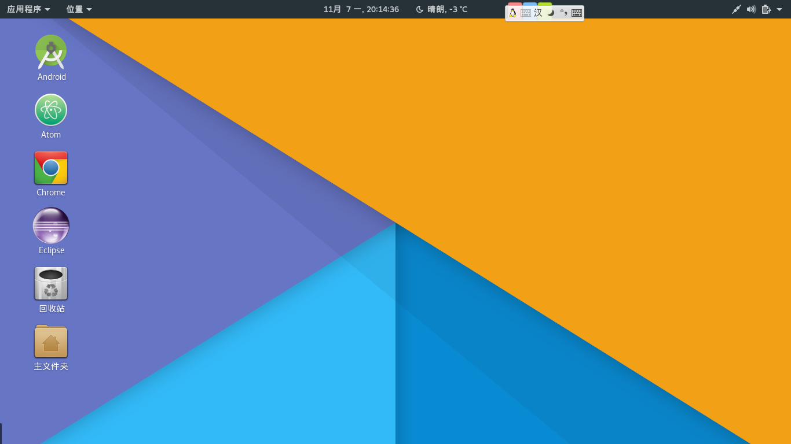

Debian 是一个自由的操作系统（OS），供您安装在计算机上使用。
Debian 系统目前采用 Linux 内核或者 FreeBSD 内核。 Linux 是一个最初由 Linus Torvalds 创建，目前由全球成千上万的程序师共同维护的软件。 FreeBSD 是一个包括内核和其它软件的操作系统。  Debian 不只是提供一个纯粹的操作系统：它还附带了超过 49000 个软件包，这些预先编译好的软件被包裹成一种良好的格式以便于在您的机器上进行安装。